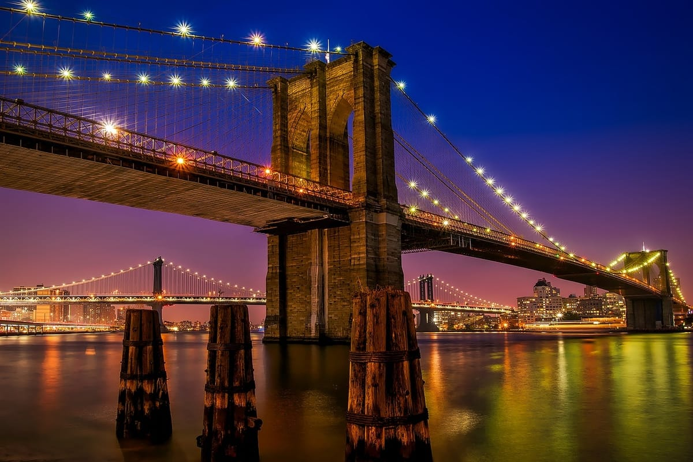
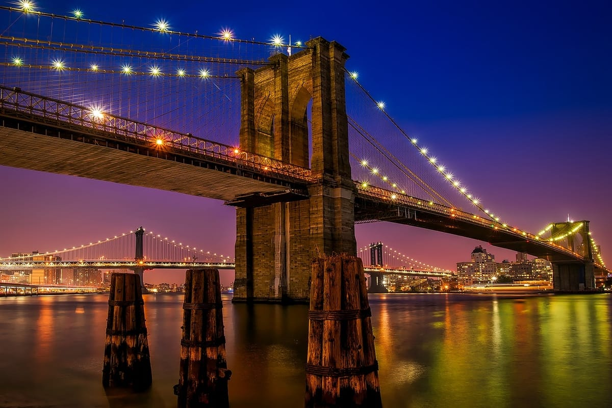

Ville de New York
New York City, surnommée la "Big Apple", est la ville la plus peuplée des États-Unis. C'est un centre mondial de finance, de culture, de commerce et de divertissement.
La ville est célèbre pour des attractions emblématiques telles que Times Square, la Statue de la Liberté, Central Park, et bien d'autres.
C'est en 1624 que les Hollandais s'installent et fondent La Nouvelle-Amsterdam (actuellement l'île de Manhattan), un lieu où vivaient les Indiens Lenapes (ou Manhattes). Quatre décennies plus tard, les Anglais s'emparent des terres et ils rebaptisent l'endroit New York.
 
